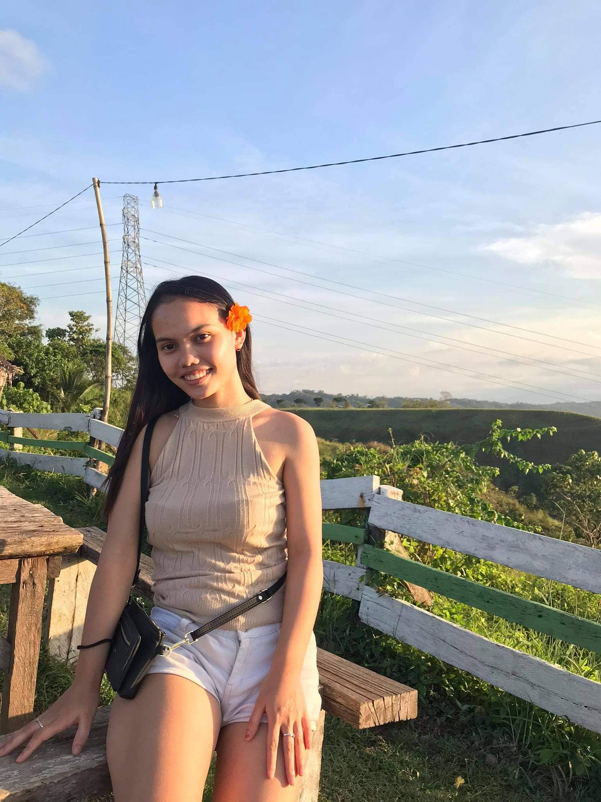

"Keep taking time with yourself until you're you again."
-Lalah Delia
Hello!
I am
Hanee Belle A. Lustre
I prefer to be called “HAN”. 19 years old and currently residing at Indahag, Cagayan de Oro City. I am a Technology Communication Management student at University of Science and Technology of Southern Philippines. Taking this course is to aspire, to become competent and effective in the field of communication and management while keeping up with the innovations and technology advancement. This course also paves the way for me to excel and propel and to foster digital literacy.